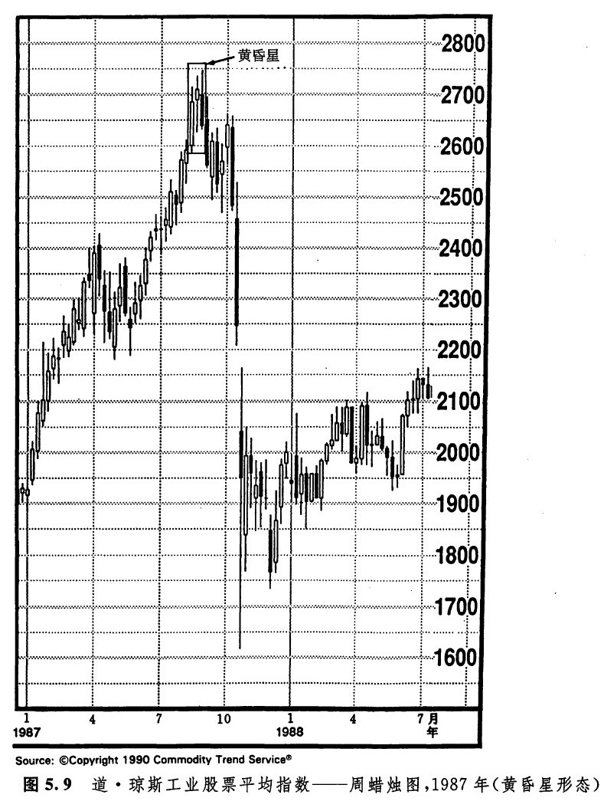
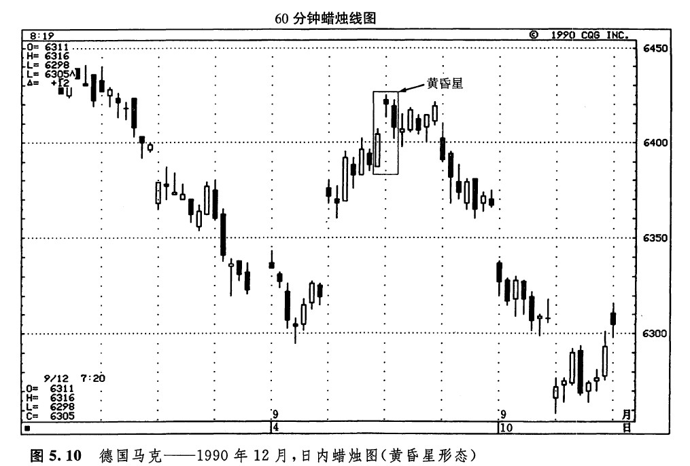
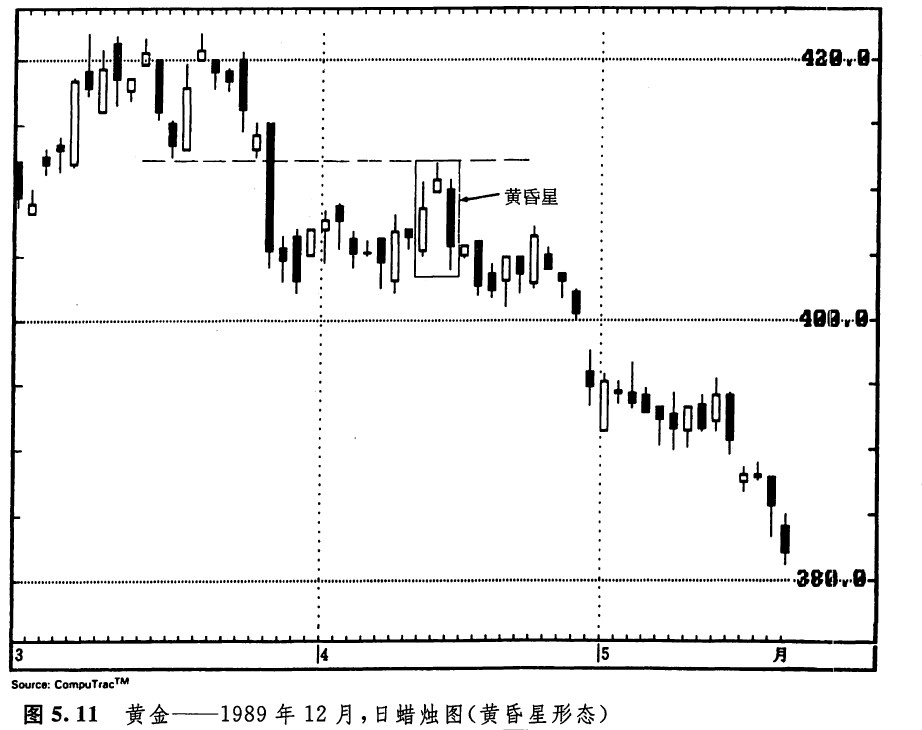
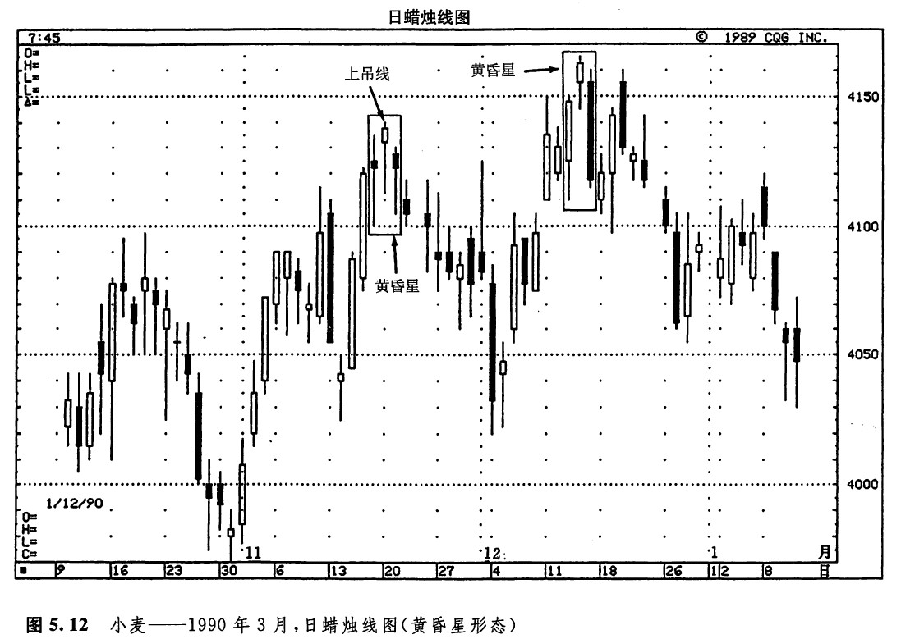

黄昏星形态
黄昏星是启明星的顶部对等形态，是看跌的。它的名称的由来也是显而易见的，因为黄昏星（金星）恰好出现在夜幕即将降临之际。既然黄昏星是顶部反转形态，那么，它只有出现在上升趋势之后，才能发挥其技术效力。黄昏星形态是由三根蜡烛线组成的（如图5.7所示)。在前两根蜡烛线中，第一根是一根长长的自色实体，后一根是一根星线。星线的出现，是顶部形态的第一个征兆。第三根蜡烛线证实了顶部过程的发生，完成了这个三线形态的黄昏星形态。第三根蜡烛线具有黑色实体，它剧烈地向下扎入第一天的白色实体的内部。我喜欢把黄昏星比喻为交通指挥信号灯。交通信号灯从绿色（对应于坚挺的白色实体）变成黄色（对应于星线的警告信号），再从黄色变成红色（对应于黑色实体，证实先前的上升趋势已告结束）。
从原则上说，在黄昏星形态中，首先在第一根实体与第二根实体之间，应当形成价格跳空；然后在第二根实体与第三根实体之间，再形成另一个价格跳空。话说回来，根据我的经验，第二个价格跳空并不常见，而且对于本形态的成功来说，可有可无，不是必要条件。本形态的关键之处在于第三天的黑色实体向下穿入第一天的白色实体的深浅程度。
图5.7乍一看去，像是西方技术分析理论中的岛形反转形态。但仔细分析一下就会发现，这个黄昏星形态所提供的反转倍号，岛形反转形态是提供不来的（参见图5.8）。在岛形反转顶部形态中，交易时段2的最低点必须同时居于交易时段1和交易时段3的最高点之上。然而，在黄昏星形态中，仅仅要求实体2的低点高于实体1的高点，就可以构成反转信号了。

如图5.9所示的黄昏星形态，出现在1987年夏的道·琼斯指数市场上，该形态标志着道·琼斯指数在当年那场暴跌之前的最高点（我很想知道，采用蜡烛图的日本技术分析师当时是否看出了这个图形！）。

图5.10是一个很好的实例，说明了蜡烛图技术如何发出这样一个顶部反转信号，如果借助于西方技术分析工具，是不容易得到这个顶部反转信号的。9月5日的最后一小时，与次日的头两个小时一起，构成一个黄昏星形态。按照前面曾提到的西方理论，这个黄昏星形态的星线部分并不符合岛形反转顶的条件。在本例的情况下，蜡烛图就提供了一个西方岛形反转顶概念不能识别的顶部反转信号。另外，请注意这个黄昏星形态所结束的上涨行情，是从9月4日的启明星形态开始的。

虽然黄昏星形态在上升趋势后更为重要，但是如果它处在横向巩固区间的顶部，那么，在其他看跌信号得到确认的条件下，也可能具有重要意义（如图5.11所示）。在本例中，4月中旬所发生的正是这种情况。在这个黄昏星形态中，星线的部分（即第二天）正与一个阻挡区不约而同地重合。阻挡区底部所处的水平为413美元，这里原本是3月里的支撑水平。过去的支撑水平常常转化为新的阻挡水平。这一点，请牢记于心！这是一条很有实用价值的交易规则。第十一章将要更深入地探讨支撑和阻挡水平的问题。无论如何，413美元附近的阻挡水平恰巧与这个黄昏星形态不期而遇，由此增强了本形态的疲弱意义。

在图5.12中，12月中旬出现了一个构造良好的黄昏星形态。在星线的前面，是一根坚挺的白色实体，在星线的后面，是一根疲软的黑色实体。11月中旬，出现了一个黄昏星形态的变体。之所以称之为变体，是因为在黄昏星形态中，星线之前通常包含一根长长的白色实体，星线之后是长长的黑色实体。可是在这里，我们既没有看到长长的白色实体，也没有看到长长的黑色实体。但是，我们毕竟还是将它判断为顶部形态，这不仅因为它的外观与黄昏星形态稍有相似之处，而且因为11月21日是一根上吊线（这根线就是这个黄昏星形态的“星”）。上吊线的次日，市场开市于上吊线的实体之下，确认了顶部形态的完成。

下面开列了一些参考性因素，如果黄昏星形态或启明星形态兼具这样的特征，则有助于增加它们构成反转信号的机会。这些因素包括：
1.如果在第一根蜡烛线的实体与星蜡烛线的实体之间存在价格跳空，并且在星线的实体与第三根蜡烛线的实体之间也存在价格跳空；
2.如果第三根蜡烛线的收市价深深地向下扎入第一根蜡烛线的实体之内；
3.如果第一根蜡烛线的交易量较轻，而第三根蜡烛线的交易量较重。这一点表明了原先趋势力量的衰减，以及新趋势力量的增长。
历史小知识
黄昏星形态和启明星形态的全称，分别是“三川黄昏星”形态和“三川启明星”形态。起初我以为，所谓“三川”黄昏星或“三川”启明星，是因为在这两种形态中都包含了三根蜡烛线——“三川”指的就是这三根蜡烛线。后来我发觉，上述名称的起源实际上有趣得多。
织回信长是日本17世纪末期的一位重要的军事将领，也是统一日本的三位军事领袖之一（参见第二章）。他曾经在日本的一个十分肥沃的稻米主产区指挥过一场决定性的战役。因为大米是财力的标志，所以他的对手拼死抵抗、寸土不让，而织田信长同样决心不惜代价，拿下这块战略要地。在这片富饶的稻米产地上，有三条重要的河流。在这三条河流上，守方凭险设置了重兵，因此织田信长在渡河时遭遇了极大的困难。最终，织田信长的部队还是强渡了这三条河流，就此也就赢得了胜利。由此可见，在“三川”启明星和“三川”黄昏星中，“三川”有两层意义，一方面它意味着：趋势的扭转是极其困难的；另一方面也意味着，一旦挑战者突破了“三川”的险阻，其胜利也就唾手可得了。
下一篇：十字启明星形态和十字黄昏星形态
上一篇：启明星形态
copyright @ 2018 制作：汉钛电线，Hingtak Wire & Cable LLC